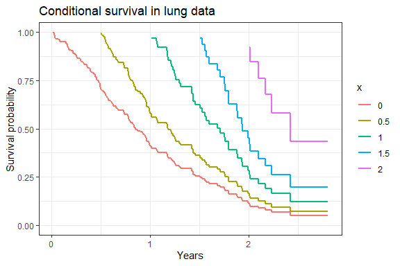

The condsurv package contains a function for generating conditional survival estimates with associated confidence intervals, and a function for plotting conditional survival curves.
If represents the survival function at time , then conditional survival is defined as
where is the number of additional survival years of interest and is the number of years a subject has already survived.
The conditional_surv_est function will generate this estimate along with 95% confidence intervals.
The lung dataset from the survival package will be used to illustrate.
# Scale the time variable to be in years rather than days
lung2 <-
mutate(
lung,
os_yrs = time / 365.25
)First generate a single conditional survival estimate. This is the conditional survival of surviving to 1 year conditioned on already having survived 6 months ( year). This returns a list, where cs_est is the conditional survival estimate, cs_lci is the lower bound of the 95% confidence interval and cs_uci is the upper bound of the 95% confidence interval.
myfit <- survfit(Surv(os_yrs, status) ~ 1, data = lung2)
conditional_surv_est(
basekm = myfit,
t1 = 0.5,
t2 = 1
)
#> $cs_est
#> [1] 0.58
#>
#> $cs_lci
#> [1] 0.49
#>
#> $cs_uci
#> [1] 0.66You can easily use purrr::map_df to get a table of estimates for multiple timepoints. For example we could get the conditional survival estimate of surviving to a variety of different time points given that the subject has already survived for 6 months (0.5 years).
prob_times <- seq(1, 2.5, 0.5)
purrr::map_df(
prob_times,
~conditional_surv_est(
basekm = myfit,
t1 = 0.5,
t2 = .x)
) %>%
dplyr::mutate(years = prob_times) %>%
dplyr::select(years, everything()) %>%
knitr::kable()| years | cs_est | cs_lci | cs_uci |
|---|---|---|---|
| 1.0 | 0.58 | 0.49 | 0.66 |
| 1.5 | 0.36 | 0.27 | 0.45 |
| 2.0 | 0.16 | 0.10 | 0.25 |
| 2.5 | 0.07 | 0.02 | 0.15 |
The confidence intervals are based on a variation of the log-log transformation, also known as the “exponential” Greenwood formula, where the conditional survival estimate is substituted in for the traditional survival estimate in constructing the confidence interval.
If is the estimated conditional survival to given having already survived to , then
where
and
= distinct death time
= number of failures at death time
= number at risk at death time
To plot the conditional survival curves at baseline, and for those who have survived 6 months, 1 year, 1.5 years, and 2 years, we use the gg_conditional_surv function.
The lung dataset from the survival package will be used to illustrate.
# Scale the time variable to be in years rather than days
lung2 <-
mutate(
lung,
os_yrs = time / 365.25
)
myfit <- survfit(Surv(os_yrs, status) ~ 1, data = lung2)
cond_times <- seq(0, 2, 0.5)
gg_conditional_surv(
basekm = myfit,
at = cond_times,
main = "Conditional survival in lung data"
) 
This package is documented using pkgdown, and the resulting website is available at http://www.emilyzabor.com/condsurv/, where detailed Tutorials can be found covering all of the package functionality.
See http://www.emilyzabor.com/condsurv/reference/ for detailed function documentation.